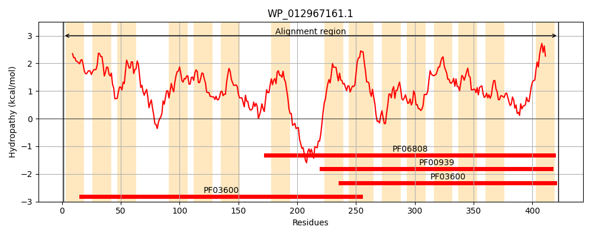
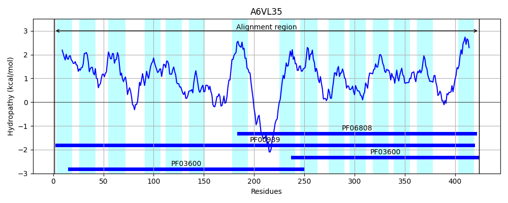
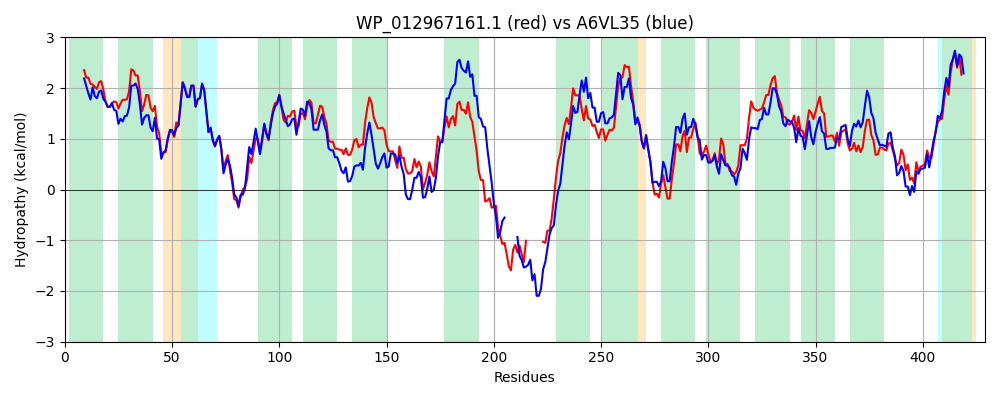

Hit Accession: A6VL35
Hit TCID: 2.A.47.5.3
Hit Description: gnl|BL_ORD_ID|658 gnl|TC-DB|A6VL35|2.A.47.5.3 Anion transporter OS=Actinobacillus succinogenes (strain ATCC 55618 / 130Z) GN=Asuc_0304 PE=4 SV=1
Mach Len: 429
e:0.000000
Query TMS Count : 15
Hit TMS Count: 15
TMS-Overlap Score: 11.800000
Predicted Substrates:CHEBI:30031;succinate(2-), CHEBI:29806;fumarate(2-)
BLAST Alignment:
Score: 1371 , Bit scores: 532 bits, E-value: 0.0e+00, Alignment length: 429, Percentage identity: 61
Query: 1 MEPITITLCLLVFAIVMFVWEKVPLAVTSMVVCVALVVTGVLDLKQAFAGFIDSNVILFVAMFIVGGALFETGMANKVGGVITHFAKTEKQLIFTIMVVVGVMSGFLSNTGTAAVLIPVVIGVAAKSGFSRSRLLMPLVFAAALGGNLSLIGAPGNLIAQSALQNIGSGFGFFEYAKVGLPMLVCGILYFLTIGYKFLPNNPNSGEVGSVGEQRDY-------SHVPRWKQILSLVVLIATILGMIFEKQTGISLAVAGCIGALVLVVTGVLTEKQAYKAIDSQTIFIFGGTLALAKALEMTGAGKLVADQVIGLLGNNSSPFMLLVVVFALSVVMTNFMSNTATVALLVPVSLSIAAGMGADPRAVLMATVIGSSCAYATPIGMPANMMVLSAGGYKFVDYAKSGIPLIIVSTIVSLILLPILFPFHP 422
M P ITLC LVFAI+MF WEK+PLAVT+MVV V L +TGVL K AF GF+D+NVILFVAMF++GGALFETGMANK+GGV++ FA +E++L+ +MV+ GVMSG LSNTGTAA+LIPV++G++AKS F+RSRLLMP+ FA+ LGGNLSLIG+P NL+ Q L G FGFFEYA++G+P+L+ GI++F+ IGY+ LP N EQ DY +H+P+WKQ LSL VLIAT+L M+FE GI L ++ C+GAL+LV+ V+TEKQAY+AIDSQ +F+F GTLALA AL+ TGAG +A ++G LG + ++LL + LS V+TNFMSNTAT ALL P+ LSIA +GADP+AVLMA V+GSSCA+ATPI PAN M+LS G Y+F DYAK+G+PLI+V+ ++ILLPILFPF P
Sbjct: 1 MTPSAITLCFLVFAIIMFAWEKLPLAVTAMVVSVGLALTGVLSAKDAFMGFVDTNVILFVAMFVIGGALFETGMANKIGGVVSRFATSERKLMVVLMVITGVMSGVLSNTGTAAILIPVILGISAKSDFARSRLLMPMAFASTLGGNLSLIGSPNNLVVQGVLSQSGDKFGFFEYAEIGVPILIIGIIFFVLIGYRLLPTQLNLHV-----EQEDYQAFHNHHNHIPKWKQWLSLAVLIATLLAMVFEDFIGIKLYLSACVGALILVIMRVITEKQAYQAIDSQVVFLFAGTLALANALQTTGAGAQIAHTILGWLGAQPNSYLLLFTILVLSCVLTNFMSNTATAALLAPIGLSIAHSLGADPKAVLMAVVVGSSCAFATPIATPANTMILSVGHYRFADYAKAGVPLIVVTIAAAMILLPILFPFFP 424 | Protein Hydropathy Plots: |
|---|
|  |  |
Pairwise Alignment-Hydropathy Plot:
|
|---|
|  |